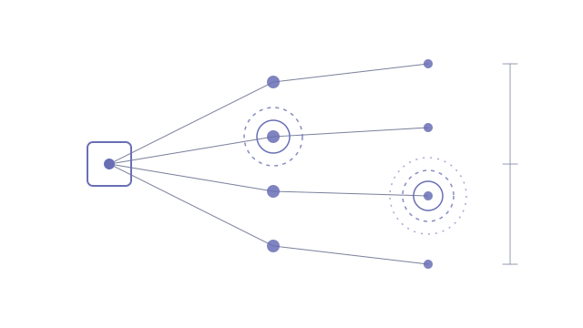

A collaborative-docs workspace accumulates thousands of documents, each shared by whoever created it, however seemed convenient at the time. Nobody can answer the basic questions: which documents are public, which are open to outside domains, and what changed since yesterday. The admin console shows one document at a time. IT needed the whole picture, every day, without being buried in alerts about exposure that has been there for years.
- A daily scheduled scan pulls every document with its access list through the platform's admin API and classifies it into nine ranked exposure classes, from publicly discoverable down to private
- Alerts fire on change, not persistence: going public is high severity, going external is medium, and the first run flags existing exposure once as a baseline
- Folder membership is modelled as its own route to access, with a flag for narrowly shared documents sitting in widely shared folders
- Views for staleness, likely-replaced duplicates, topics and owners, with batch outreach so owners fix their own documents
- One-click remediations (remove public link, remove external access, archive) gated behind a reviewer list
The first real scan classified about 4,700 documents in 30 seconds and surfaced roughly 1,400 baseline flags. Modelling folder reach found several hundred more documents that were far more widely readable than their own sharing settings suggested. Live behind single sign-on, with two security reviews completed and every finding fixed before launch.
- Next.js on Vercel · scheduled cron
- Supabase · Postgres, row-level security
- Collaborative-docs Admin API
- Google SSO
Alert on change, or nobody reads the alerts
The obvious version of this tool flags every exposed document, every day. On the first scan that would have been well over a thousand flags, and by the end of the first week the channel would have been muted. An audit that people stop reading is worse than none, because it creates the impression that someone is watching.
So the flags describe events, not states. A document that has been shared with an outside domain for two years is recorded once, as part of a baseline, and then left alone until someone works through it. A document that goes public today raises a high-severity flag today. The same scan data drives both, but the question the alert answers changes from "what is wrong?" to "what just got worse?", which is the question someone can act on before lunch.
The exposure that wasn't in the access list
Classifying each document from its own access list was the straightforward part. The finding that mattered came from asking who could actually open a document, rather than who it had been shared with. In this platform, being a member of a folder grants access to everything inside it. A document shared with three named people, sitting in a folder shared with a hundred, is readable by a hundred.
Once folder reach was modelled, several hundred documents that looked narrowly shared turned out to be visible to far more people, with one all-staff folder alone opening up more than a hundred of them. That became its own flag class with a configurable threshold, so a document in a small team folder stays quiet while one in a company-wide folder gets looked at. It is a good reminder that permissions are a graph, and an audit that only reads the nodes will miss the edges.